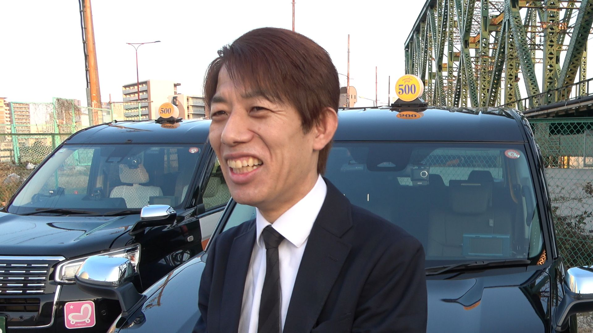

ワンコインドームのタクシー乗務で、「乗務員ファースト」を感じた点を教えてください。
まずは収入面ですね。
タクシー乗務員に転職するにあたり、お金が必要だったので、賃率の高い会社を望んでいました。
色々と各社の情報を探していたところ、ワンコインドームの賃率が大阪でも随一だと知り、ここで働きたいと感じました。

「乗務員ファースト」について、答えてくれたタクシー乗務員さん
ソノさん 乗務歴３年目 夜勤
まずは収入面ですね。
タクシー乗務員に転職するにあたり、お金が必要だったので、賃率の高い会社を望んでいました。
色々と各社の情報を探していたところ、ワンコインドームの賃率が大阪でも随一だと知り、ここで働きたいと感じました。
予想以上でした。
ワンコインドームは一定の売上を超えると、賃率が最大で80%になるインセンティブがあります。
いつも、人参をぶら下げられている印象です（笑）
でも、ここまで収入として還元してくださる、会社には本当に感謝しています。
個人的にすごく気に入っているのが、シフトが自由な点です。
実は、ワンコインドームを受ける前に、他のタクシー会社に在籍していたことがあるのですが、そこは会社の決めた通りに出庫しなければならず、シフトが自由というわけではありませんでした。
でも、ワンコインドームの場合は、シフトを自由に決められるだけでなく、乗務日数や、いつ出庫して、いつ入庫するかも決めることができるので、プライベートの予定がある時など、本当に助かります。
はい、シフトの変更は柔軟に対応してもらえます。
出勤だけど急に休みに変更、となった場合は、午前9時までに会社へ連絡するだけで休めます。
他の乗務員さんでも、子供が病気になって、急に休まないといけなくなった時にも、とてもありがたい、との声をよく耳にしますよ。
僕の場合は、休みだったけど、大した用事もない日で、大雨だったりすると、タクシーが足りなくなるので、急に出勤に変更することもあります。
そういう日は稼げますからね。
ワンコインドームでは、didi、GO、uver、S-RIDEという4つのアプリを、乗務員の希望にあわせて営業で使用することができます。
これは後で知ったのですが、大阪の会社としては一番のようです。
今や配車アプリは、タクシードライバーにとっては最大の良き相棒、なくてはならないものです。稼ぐ上では、本当に有難いことですよ。
タクシー車両が、JPNタクシーが多いところでしょうか。
僕自身も入社して1年以内に JPN タクシーを担当することになりましたが、中小の会社として考えると、保有率は多いと思います。
僕たちタクシー乗務員にとって、タクシー車両はオフィスなので、快適で清潔、新しい車種に乗れることは、何よりの乗務員ファーストだと実感しています。
他の乗務員さんも、シェンタやプリウスなど、多種多様な車種に乗っているので、見ていても楽しい感じはしますね。
ワンコインドームは、いつでもタクシー乗務員が主役でいられる環境創りを大事にしています。
高い収入だけでなく、自由な時間、気楽な人間関係、タクシー乗務を通して、全てを実現してください。
これが、私たちワンコインドームの合言葉です。